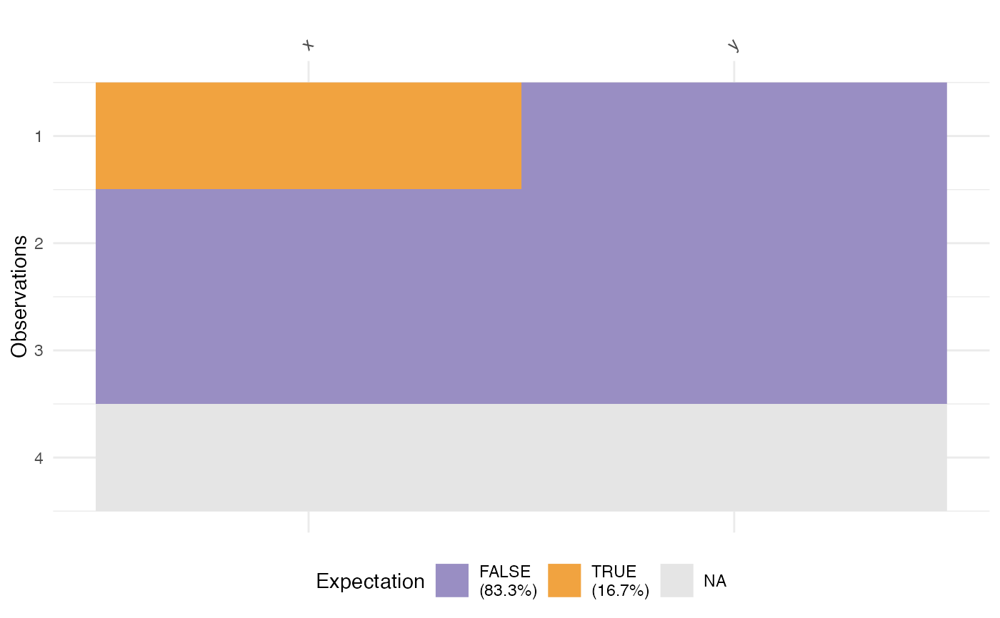
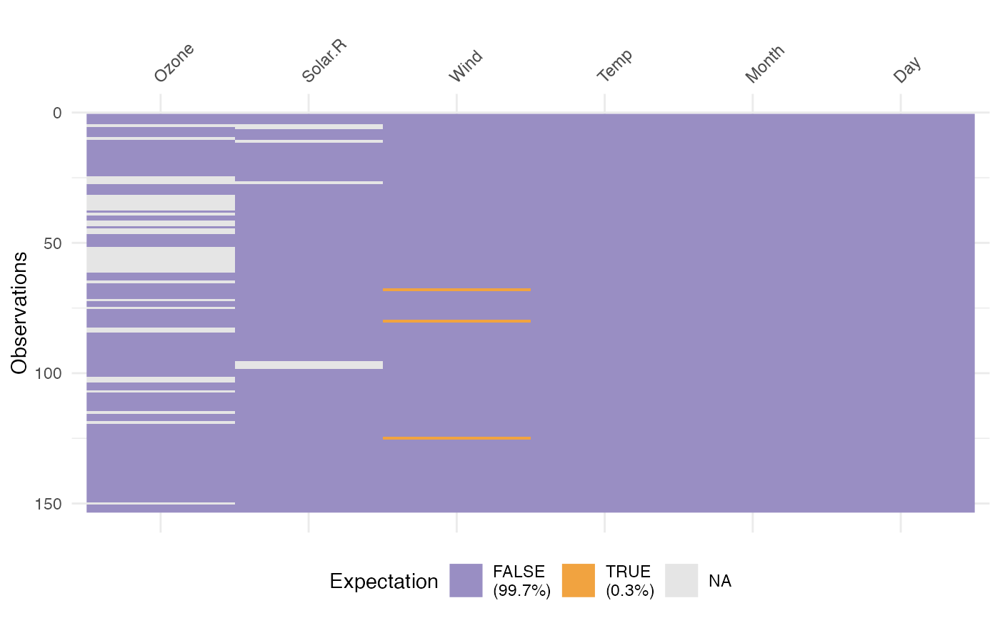
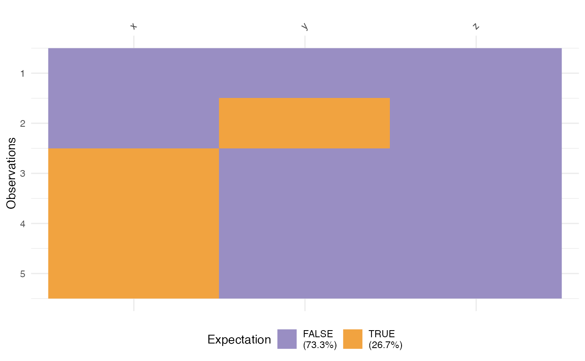

vis_expect visualises certain conditions or values in your data. For
example, If you are not sure whether to expect -1 in your data, you could
write: vis_expect(data, ~.x == -1), and you can see if there are times
where the values in your data are equal to -1. You could also, for example,
explore a set of bad strings, or possible NA values and visualise where
they are using vis_expect(data, ~.x %in% bad_strings) where
bad_strings is a character vector containing bad strings like N A
N/A etc.
vis_expect(data, expectation, show_perc = TRUE)
Arguments
| data | a data.frame |
|---|---|
| expectation | a formula following the syntax: |
| show_perc | logical. TRUE now adds in the \ TRUE or FALSE in the whole dataset into the legend. Default value is TRUE. |
Value
a ggplot2 object
See also
Examples
dat_test <- tibble::tribble( ~x, ~y, -1, "A", 0, "B", 1, "C", NA, NA ) vis_expect(dat_test, ~.x == -1)vis_expect(airquality, ~.x == 5.1)# explore some common NA strings common_nas <- c( "NA", "N A", "N/A", "na", "n a", "n/a" ) dat_ms <- tibble::tribble(~x, ~y, ~z, "1", "A", -100, "3", "N/A", -99, "NA", NA, -98, "N A", "E", -101, "na", "F", -1) vis_expect(dat_ms, ~.x %in% common_nas)